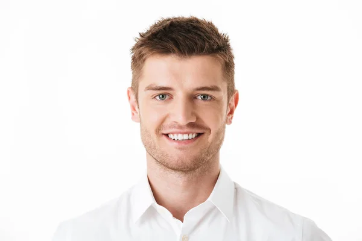

Testimonios

""Como diseñador gráfico, siempre busco herramientas que me ahorren tiempo sin sacrificar calidad. Este editor de fotos con IA ha transformado mi flujo de trabajo: puedo crear imágenes increíbles en minutos y experimentar con estilos que antes eran imposibles. ¡Totalmente recomendable!""
""Uso esta herramienta para mis redes sociales y mis campañas de marketing, y los resultados son espectaculares. La IA me permite crear contenido único y llamativo que conecta con mi audiencia. Definitivamente ha elevado mi marca al siguiente nivel.""

""Nunca pensé que podría crear fotos tan impresionantes sin ser un profesional. La IA hace todo más fácil y divertido. Ahora puedo darle vida a mis ideas y sorprender a mis amigos con resultados que parecen sacados de un estudio profesional.""